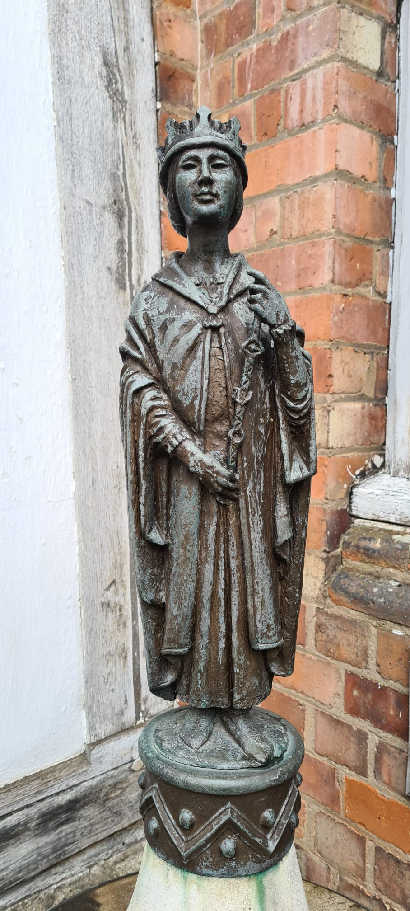
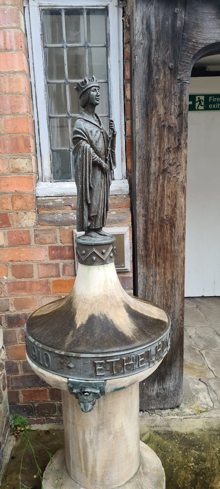

Æthelflæd, Lady of the Mercians may have been written out of history, but today we can find evidence of her life and achievements in many places.
Leicester
Æthelflæd, Lady of the Mercians played a significant role in the history of Leicester, liberating the town from the control of Danish forces in 918 and reclaiming the city as part of the Anglo-Saxon territory of Mercia. This is commemorated by a small statue of Æthelflæd in the Guildhall square with a plaque stating that she repelled the Danes, but also a reminder that a more substantial monument to her was intended: "this bronze statuette is a replica of the former drinking fountain erected on Victoria Park in 1922 and paid for from money left by Edith Gittins 1845-1910 who was well-known locally for her generous public service."


Her life was however celebrated as part of Leicester Libraries Week on Monday 2nd October, 2023 where I gave a talk on her life. She is the subject of my novel King Alfred's Daughter which tells the story of Æthelflæd, the heroine who was written out of history. I reminded the audience of the achievement of this remarkable person, the first woman to rule an Anglo-Saxon state in her own right, who founded many towns in the Midlands as part of her system of defensive boroughs and who fostered Athelstan the first king of all England.